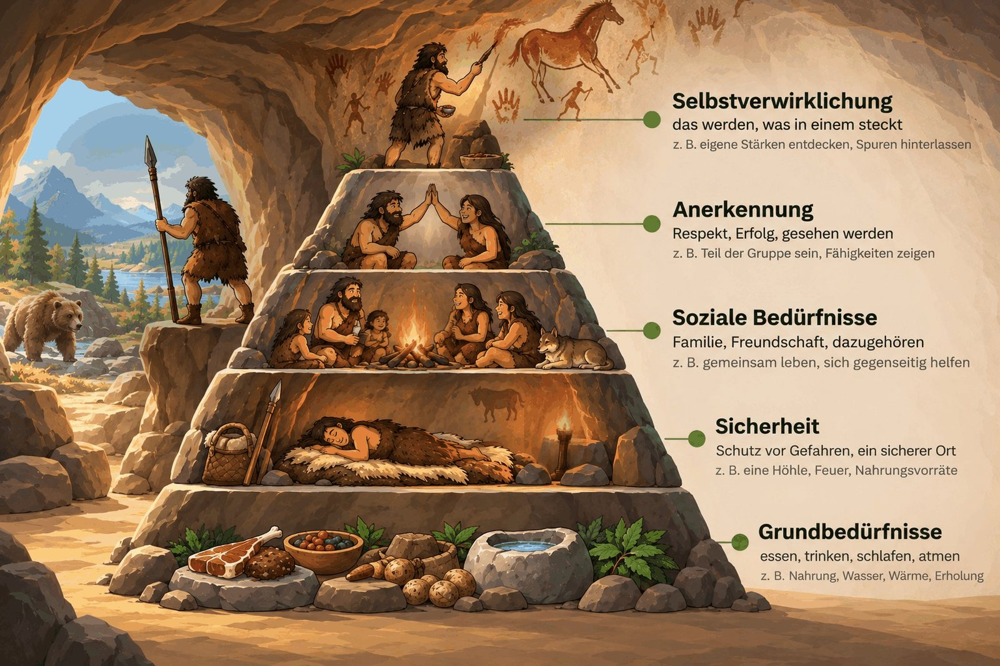

Eine Bildergeschichte durch die Bedürfnispyramide — von unten nach oben. Mit den Pfeiltasten oder den Knöpfen weiterklicken.

Abb.: Die fünf Stufen an einer Steinzeitsiedlung. Bild erstellt mit ChatGPT.
Bedürfnispyramide nach Abraham H. Maslow (1943). Darstellung als Steinzeitsiedlung: eigene Umsetzung für den ABU an der HKV Aarau.